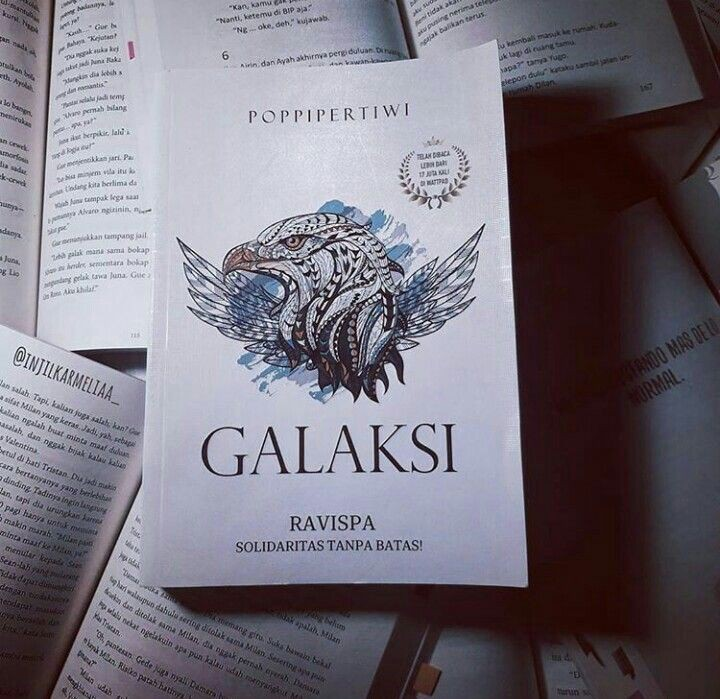

ABOUT THIS NOVEL

CONTACT SELLER
INSTAGRAM
WHATSAPP
E-MAIL
GALAKSI
| NAMA NOVEL | GALAKSI |
|---|
| PENULIS | NI WAYAN POPPI PERTIWI |
|---|
| TEBIT | PADA : AGUSTUS 2018 |
|---|
| OLEH : COCONUT BOOKS |
| GENRE | TEENFICTION |
|---|
| JUMLAH HALAMAN | 492 HALAMAN |
|---|
| UKURAN | 21 x 14,5 CM |
|---|
| ISBN | 978-602-5508-45-5 |
|---|
| BERAT | 530 gr |
|---|
| HARGA | 99.000 |
|---|
SINOPSIS
Novel Galaksi bercerita tentang dua orang remaja bernama Galaksi Aldebaran dan Kejora Ayodhya.
Galaksi Aldebaran merupakan ketua geng Ravispa yang beranggotakan murid-murid nakal dan biang onar di SMA Ganesha.
Sedangkan Kejora Ayodhya adalah seorang siswi SMA Ganesha yang merupakan anggota paskibra SMA Ganesha.
Ravispa sendiri adalah geng sekolah yang kerap membuat masalah, seperti bolos saat jam pelajaran berlangsung,
hingga berkelahi jika ada salah satu anggotanya yang diusik. Ravispa memiliki markas atau basecamp di sebuah warung pojok atau biasa disebut warjok.
Semboyan dari Ravispa adalah Solidaritas Tanpa Batas, yang di mana mereka akan membela dan melindungi sesama anggota.
Tanpa kehadiran Ravispa, Galaksi bukanlah siapa-siapa. Ravispa merupakan darah, daging, dan keluarga bagi Galaksi di dalam hidupnya.
Namun, pertemuan Galaksi dengan Kejora, gadis anggota paskibra, membuat segalanya berubah. Pertemuan mereka berawal dari Galaksi yang menyelamatkan Kejora dari ulah Avegar,
geng SMA Kencana, yang kerap berselisih dengan Ravispa.
Sejak saat itu, Avegar mulai menggunakan Kejora sebagai umpan untuk memancing keributan dengan Ravispa, khususnya dengan Galaksi. Kini, Kejora telah menjadi titik lemah dalam diri Galaksi.
Kejora yang selalu menjadi sasaran atau incaran dari Avegar menumbuhkan perasaan ingin melindungi dari Galaksi yang semakin mendekatkan Galaksi dan Kejora.
Kedekatan mereka yang semakin intens dan kuat pada akhirnya menumbuhkan rasa suka dari dalam diri Galaksi. Hubungan yang terjalin diantara mereka membuat
Galaksi menjadi jauh lebih terbuka terhadap Kejora mengenai kehidupannya.
Galaksi memang dikenal sebagai anak yang nakal, keras, dingin, dan pemberontak. Akan tetapi, di balik semua kelakuannya tersebut ada sesuatu yang melatarbelakanginya.
Galaksi merupakan salah satu anak korban broken home, di mana kedua orangtua Galaksi sudah berpisah sejak lama. Galaksi juga kerap menerima perlakuan pilih kasih dari orangtuanya,
kakak Galaksi jauh lebih dibanggakan daripada dirinya.
Maka, tidak mengherankan jika Galaksi sering menunjukkan sikap yang keras, bahkan terhadap Kejora sekalipun.
Permasalahan yang muncul dalam hubungan antara Galaksi dan Kejora di antaranya adalah banyak yang tidak suka akan hubungan mereka, bahkan Kejora sampai mendapatkan ancaman untuk menjauhi Galaksi.
Kejora sendiri sempat merasa takut dan ragu akan hubungannya dengan Galaksi melihat dampak dan reaksi yang ia rasakan. Akan tetapi, dibalik sikap Galaksi yang dingin dan keras,
ia kerap menunjukkan perilaku yang bertanggung jawab terhadap apapun.
Semua kisah di masa putih abu-abu berhasil dihadirkan dalam novel Galaksi ini. Banyak lika-liku, naik-turun, hingga romansa yang mewarnai setiap langkah dari hubungan antara Galaksi dan Kejora.
Kedua tokohnya dihadapkan pada permasalahan yang pada umumnya seringkali dihadapi oleh para remaja, sehingga akan banyak pembaca remaja yang merasa relate dengan jalan ceritanya.